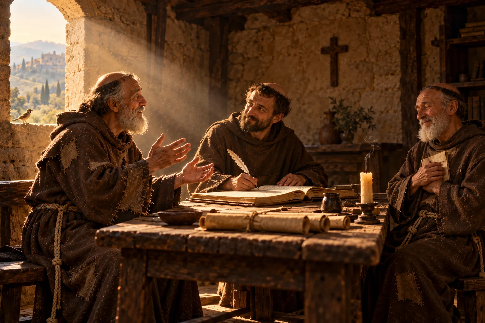

O que disseram de São Francisco: 800 anos de testemunhos
Quem conviveu com ele, quem escreveu a sua vida, um dos maiores poetas da história e os Papas, de 1228 até hoje. Veja como cada época enxergou o Pobrezinho de Assis e por que ele continua a tocar tanta gente.

Na página Palavras de São Francisco é ele quem fala. Aqui, falam os outros: quem conviveu com Francisco, quem escreveu a sua vida e quem, séculos depois, continuou a se encantar com ele. Os testemunhos estão em ordem do tempo, para que se possa ver como a figura de Francisco atravessou oito séculos.
Sobre as citações: os textos medievais foram traduzidos por A Boa Idade a partir do latim e do italiano originais. As frases dos Papas seguem as traduções oficiais publicadas pelo Vaticano ou pela imprensa católica, indicadas nas fontes ao final.
Quem conviveu com ele
Santa Clara de Assis
1194–1253 · fundadora das ClarissasClara tinha 18 anos quando deixou a casa da família nobre para seguir Francisco, em 1212. Ela sobreviveu a ele por 27 anos e foi, até o fim, a mais fiel guardiã do seu jeito de viver a pobreza. Na Regra que escreveu para as irmãs, a primeira escrita por uma mulher a ser aprovada por um Papa, ela se apresenta assim:
Clara, indigna serva de Cristo e plantinha do beatíssimo pai Francisco.
E, no seu Testamento, resume o que Francisco significou para ela:
O Filho de Deus fez-se para nós o Caminho, que o nosso beatíssimo pai Francisco, seu verdadeiro amante e imitador, nos mostrou e ensinou pela palavra e pelo exemplo.
Cardeal Hugolino, depois Papa Gregório IX
c. 1170–1241 · protetor da Ordem e Papa de 1227 a 1241Amigo e conselheiro de Francisco, o cardeal Hugolino era o “senhor de Óstia” citado no Testamento, protetor oficial dos frades. Eleito Papa com o nome de Gregório IX, ele mesmo proclamou Francisco santo em Assis, em 16 de julho de 1228, menos de dois anos depois da sua morte. No dia seguinte, lançou a pedra fundamental da Basílica de São Francisco. Foi também ele quem encomendou a primeira biografia do santo.
Frei Tomás de Celano
c. 1190–c. 1260 · primeiro biógrafo de FranciscoFrade que conheceu Francisco pessoalmente, Tomás de Celano escreveu a primeira biografia do santo, a pedido de Gregório IX, logo depois da canonização, entre 1228 e 1229. Anos depois escreveu uma segunda vida, com as lembranças dos companheiros. É ele quem nos deixa um retrato de Francisco: rosto alegre, olhar bondoso, estatura mediana, mais para baixa, magro, de voz forte, doce e clara. E é dele a frase mais bonita sobre a oração de Francisco:
Ele era todo, não tanto um homem que rezava, mas a própria oração.
Foi também Celano quem descreveu, com detalhes, o presépio de Greccio, em 1223, e a morte de Francisco na Porciúncula.
Os Três Companheiros
Frei Leão, Frei Rufino e Frei Ângelo · 1246Em 1246, vinte anos depois da morte de Francisco, três dos seus companheiros mais próximos atenderam a um pedido da Ordem e escreveram as suas lembranças. Frei Leão era o secretário e confessor de Francisco, o mesmo a quem ele escreveu de próprio punho a famosa bênção. Nos relatos desses frades aparece muitas vezes uma expressão que dá peso a tudo: “nós, que estivemos com ele”. Não é história ouvida de longe; é memória de quem viu.
A Idade Média se encanta
São Boaventura
1221–1274 · ministro geral da Ordem e doutor da IgrejaQuando menino, Boaventura ficou gravemente doente, e a sua mãe pediu a cura a Francisco. Anos depois ele entrou na Ordem, tornou-se o seu ministro geral e escreveu, entre 1260 e 1263, a biografia oficial de Francisco, a Legenda Maior. Logo no começo do livro, Boaventura compara Francisco ao anjo do Apocalipse que “subia do nascente do sol, trazendo o selo do Deus vivo” (Apocalipse 7,2), uma alusão aos estigmas que Francisco trazia no corpo. Para Boaventura, Francisco era um sinal enviado por Deus para despertar o mundo.
Os Fioretti (Florzinhas de São Francisco)
século XIV · tradição popularNo século XIV, as histórias contadas pelos frades foram reunidas num livrinho escrito em italiano, os Fioretti. É ali que estão o lobo de Gubbio, a pregação aos pássaros e a “perfeita alegria”. Não é um livro de história no sentido moderno: é a memória afetuosa de um povo, que guardou Francisco como o santo da simplicidade, da paz e da amizade com toda a criação. Foi pelos Fioretti que gerações inteiras conheceram Francisco.
Os afrescos da Basílica de Assis
fim do século XIII · atribuídos a GiottoNa Basílica Superior de Assis, 28 grandes pinturas nas paredes contam a vida de Francisco, da juventude à morte. São tradicionalmente atribuídas a Giotto e à sua oficina, e seguem de perto a biografia de São Boaventura. Numa época em que pouca gente sabia ler, essas paredes foram o “livro” em que milhões de peregrinos aprenderam a vida do santo. Até hoje, a cena da renúncia diante do bispo e a do presépio de Greccio são das mais conhecidas da arte cristã.
Dante Alighieri
1265–1321 · poeta, autor da Divina ComédiaNo Canto XI do Paraíso, Dante dedica um canto inteiro a Francisco, contado por São Tomás de Aquino. Descreve o seu “casamento” com a Senhora Pobreza e compara o nascimento de Francisco em Assis ao nascer do sol:
Nasceu no mundo um sol.
Dante também diz que Francisco “foi todo seráfico no ardor”, isto é, que o seu amor a Deus queimava como o dos serafins, os anjos mais próximos de Deus. O próprio Bento XVI abriu com esse verso a sua catequese sobre o santo, em 2010.
Os Papas dos nossos tempos
Papa Pio XII
Papa de 1939 a 1958Em junho de 1939, meses antes do início da Segunda Guerra Mundial, Pio XII proclamou São Francisco padroeiro da Itália, ao lado de Santa Catarina de Sena, e o definiu assim:
O mais italiano dos santos e o mais santo dos italianos.
São João Paulo II
Papa de 1978 a 2005Em 29 de novembro de 1979, João Paulo II proclamou Francisco padroeiro dos que cuidam da ecologia, reconhecendo o seu amor por toda a criação. E, em 27 de outubro de 1986, escolheu Assis para reunir líderes de muitas religiões do mundo num Dia de Oração pela Paz. A escolha do lugar foi uma homenagem ao santo que, em plena guerra, atravessou o campo de batalha para encontrar o sultão do Egito. O encontro de Assis se tornou um marco: em 2026, completa exatamente 40 anos.
Papa Bento XVI
Papa de 2005 a 2013Na audiência geral de 27 de janeiro de 2010, dedicada inteiramente a Francisco, Bento XVI o apresentou como um autêntico “gigante” da santidade, que continua a fascinar pessoas de todas as idades e religiões. Em 2011, nos 25 anos do encontro de 1986, ele mesmo voltou a Assis com líderes religiosos para rezar pela paz.
Papa Francisco
Papa de 2013 a 2025Primeiro Papa da história a escolher o nome Francisco, o cardeal argentino Jorge Mario Bergoglio explicou a escolha aos jornalistas, três dias depois da eleição, em 16 de março de 2013. Contou que, quando os votos chegaram ao número necessário, o cardeal brasileiro Dom Cláudio Hummes, sentado ao seu lado, o abraçou e disse: “Não se esqueça dos pobres”. E ele pensou em Francisco de Assis:
Para mim, é o homem da pobreza, o homem da paz, o homem que ama e preserva a criação. […] Ah, como eu queria uma Igreja pobre e para os pobres!
Ao longo do seu pontificado, ele deu nomes franciscanos aos seus documentos mais conhecidos: a encíclica Laudato si’ (2015), tirada do Cântico das Criaturas, e a Fratelli tutti (2020), assinada em Assis, junto ao túmulo do santo.
Papa Leão XIV
Papa desde 2025O primeiro grande documento de Leão XIV, a exortação apostólica Dilexi te, sobre o amor aos pobres, foi assinado em 4 de outubro de 2025, dia de São Francisco. Foi ele também quem proclamou o Ano Jubilar Franciscano pelos 800 anos da morte do santo, de 10 de janeiro de 2026 a 10 de janeiro de 2027. Em agosto de 2026, celebrou em Assis uma missa com jovens franciscanos de toda a Europa, na Basílica de Santa Maria dos Anjos, onde fica a Porciúncula. E, no Angelus de outubro de 2026, resumiu oito séculos numa frase:
O carisma de São Francisco continua a dar frutos ainda hoje.
O que todos esses testemunhos têm em comum
Uma jovem que deixou tudo para segui-lo, um Papa medieval, um poeta, um pintor, os Papas de hoje: pessoas muito diferentes, em épocas muito diferentes, viram em Francisco a mesma coisa. Viram um homem que levou o Evangelho a sério, sem glosa, e que, por isso, se tornou livre, alegre e irmão de todos.
Talvez seja esse o maior testemunho: oitocentos anos depois, ainda há quem deixe uma vida confortável para viver como ele, e milhões de pessoas que, sem deixar nada, aprendem com ele a viver um pouco mais leves.
Paz e bem!
Para continuar
- Leia a vida completa de Francisco em São Francisco de Assis: do filho do rico comerciante ao Pobrezinho de Deus.
- Leia o Testamento e as Admoestações em Palavras de São Francisco.
- Reze com ele a Oração diante do Crucifixo, com reflexão do Sr. Oliveira.
Fontes principais
- Santa Clara de Assis — Regra (cap. 1) e Testamento. Fontes Clarianas.
- Tomás de Celano — Vida Primeira (1228–1229) e Vida Segunda (1246–1247) de São Francisco.
- Legenda dos Três Companheiros (1246).
- São Boaventura — Legenda Maior (1260–1263), Prólogo.
- I Fioretti di San Francesco (século XIV).
- Dante Alighieri — Divina Comédia, Paraíso, Canto XI.
- Pio XII — Breve pontifício que proclama São Francisco e Santa Catarina de Sena padroeiros da Itália, 18 de junho de 1939.
- Bento XVI — Discurso de 28 de novembro de 2011 (sobre Pio XII e João Paulo II) e Audiência Geral de 27 de janeiro de 2010 (vatican.va).
- João Paulo II — Carta apostólica Inter Sanctos, 29 de novembro de 1979.
- Papa Francisco — Encontro com os representantes dos meios de comunicação social, 16 de março de 2013 (vatican.va).
- Leão XIV — Exortação apostólica Dilexi te, 4 de outubro de 2025; Angelus de outubro de 2026 (Catholic News Agency); missa em Assis com o Encontro da Juventude Franciscana, agosto de 2026 (Vatican News).